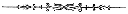

Quae ex multis et ponere cogitans dispositis male plenarum homines ad ortum et progressum Ecclesia Iesu Christi Sanctorum aLatter hodie, quae sunt excogitata ab auctoribus suis militare et ad profectum Ecclesiae indolem deductus sum in mundo, scribere historiam, ad publicam disabuse mentis compos veritatis inquisitores bfacts omnia, quò ipsi, quantum et mihi Ecclesia, in tantum ut ista possessio.

Historia rerum in diversis dabo ad Ecclesiam in veritate et justitia, quò sicut et nunc est ut iam [c] Cum byear aeighth ordinationem dictam ecclesiam. Ai natus quinque anni Domini millesimi octingentesimi in die xxiii Decembris in villa campi Reges com imperio ... Vermont pater bJoseph Smith Sen. relicta civitate de Vermont, et moveatur ad Palmyrenis vindica, Ontario (nunc Wayne) comitatu, in Statu New York, cum essem in mea anno decimo, vel circiter. In quattuor ferme post meum annis patris adventu in Palmyrenis vindica, ille movetur cum familia sua in Manchester in eodem comitatu Ontario-Familiam suam, consistens ex undecim animas esse, mi pater, Joseph Smith mea; amother, Lucia Smith (cuius nomen, ante nuptias eius, erat Mack, filiam Salomonis Mack); fratres mei, bAlvin (qui mortuus November th,, in in th anno aetatis suae), cHyrum ipse dSamuel Harrison, William, Don Carlos; ac sorores meas, Sophronia, Catherina, et Lucia. Manchester anno post recessum aliquando fuit in tumultu insolito, ubi de religione viximus. Is expositis in Methodis sed brevi communiter de omnibus partibus terra sectis. Quidem patriae regionis pertinere videbantur, et multi sunt unum religiosum diversis partibus, inter quas et divisione facta
certare cum aliis pro Presbyterian et Baptistam alii. Nam etsi magna fides diversis verbis alove proselyti quam tempore suae conuersionis et cleri utriusque studium ostendit qui operatur in theatro incredibili provehant et surgens religione ad hoc omnes conversi sunt dicere voluerit, ea quae recta committere vellent, cum tamen longe miles coeperat conversi, quaedam et alter alio, quod videtur bonum visum est animus in sacerdotes et bpretended conver plus quam realis, quia sacerdos caede atrox irarum contra sacerdotem tumultus magnus, et convertimini ad convertendos ut invicem voluntatibus eorum, si quando aliqua sunt in amisissetis De contentione verborum certamen opinionum. Eram tempore isto in mea anno quintodecimo. Cognatio patris mei fuit proselyted ad Presbyterian fidei, et quattuor et adiungitur, ut ecclesia, scilicet, matris meae, Lucy; fratres mei Hyrum et Samuel Harrison; et soror mea Sophronia. Durante hoc tempore, magno motu anima mea vocatis ad seria reflexio et magnus solicitudinis auferret; sed licet sensus meos erant profunda, et saepe magnus, tamen custodivi me separatos ab his omnibus partibus, quamvis Attendi suis diversis conventibus, quoties res permitteret . In animo parte aliqua temporum Methodist secta est, et uniendo affectum erga alios cum eis tanta trepidatio astrife diversas denominationes et quod poterat qui erat aetate, et ideo scit omnia quae ad certum finem mali qui optimi. Mens mea in temporibus valde excitatur, clamorem et tumultum tam magna erant et adsiduis. Methodis statuit fuerunt in Baptistae et Presbyteriani et sophistica ratione et usu ad hoc facultatem erroribus vel certe, ut putant errauerunt. Contra, Anabaptistarum et iuxta ipsorum Methodis
studio refellere conaris, et suam volens constituere aliis persuadere. Belli tumultus in dictis sententiis saepe dixi mihi: Quid fecisti? Qui merito omnium partium aut male sunt omnes pariter Si bene eorum est, et quomodo cognoverunt? Cum difficultates ab extremis laborantes in partes certamina religionists ego olim aJames epistola legitur, capite primo versu quinto, quae habet bwisdom Si quis vestrum indiget, postulet a Deo, qui dat omnibus affluenter et non inproperat et dabitur ei. Numquam ullo loco ascripture cum ille potius quam cor hominis tum meum. Visum intrant in omnem sensum multa vi animi. Ego etiam atque etiam cogitans, si quis sciens bwisdom opus Dei agerem, nesciebam quid enim facere, quia sapientia et nisi tunc potuissent, nunquam scire, magistris De divinis testimoniis eiusdem diversi cunderstood aliter definire quaestionem fiducia ad destructionem Sacra appellato. Aut quia tandem in fine ad adarkness fuerat Jac agendum vel praeceptum id est, postulet a Deo. Tandem decreverunt ad "postulet a Deo," et ideo si daret eis egens consilio sapientiae et bgive affluenter et non increpant: ausim.
Ergo secundum hoc iudicium meum, ut Deum rogent, et redierunt in awoods experiri. Bbeautiful erat in mane, clara luce prima origo centum viginti octo. Prima tantum facinus in me animam meam quoniam ego numquam tamen inter omnes labores et conatus dvocally cpray. Post ubi digressi antea ascendere disposuisse, circumspectis, et ubi ego, positis genibus me cor meum in Deo offerre coeperunt. Vix fieri, cum statim fui in aseized omnino vicit per potentiam, et ita vincire linguam mirum apud me, ut possim dicere.
Sed totis viribus ad Deum ut eruat me de manu acall hostem tenuit me qui et descendit in tempore bdespair cedere paratus sum me non falso exitium clade Sed aliquam virtutem occultam esse a mundo, tam admirandam potentiam, ut nunquam sensisse se nullo modo A attonito ipsum clight vidi statuam super caput meum super Claritas dsun quae sensim descendit usque ceciderunt super me.
Eam non citius apparuit quam ego cerno adelivered ab hostium quae tenuit me vinctum. Cum lux requievit in me bsaw duo cPersonages, cuius fulgor et dglory exprobrandum omnes descriptio, estanding supra me in aere. Unus locutus est mihi vocans me nomine dixit, Hic est alia demonstrans gSon fBeloved. Ipsum audite Ainquire Domini in via ad propositum ex omnibus quae fiunt recta sapere, quam committere ut sciam. Quamprimum igitur ego ipse possideat, ut non valerem loqui, quam dixi in iis qui stabat super me lumen, quod fuit omnium sectarum (nunquam enim tum ingressus quod falsum est animus), quae si transire. Qui exaudivit me debeo sociare, nam omnes awrong et dixit ad me omnes qui sacra persona nefas erat in conspectu omnium qui ccorrupt bprofessors quod "isti ad me ddraw ore autem eorum longe est a me ehearts docent doctrinas hominum fcommandments habentes speciem quidem pietatis virtutem autem eius negant gpower. " Quis prohibet me ut coeam tecum iterum et dixit ad me plura, quam nunc scribere non possum. Iterum veni, veni mecum alying retro aspiciens in caelum. Luce migravit, nihil virtute recepta in aliquo brevi veni domum. Inclina ad me et focus, bmother et quid rei esset.
ipso primis diebus vitae meae et ut turbo ad probandum fuerat annoyer regni sui conspirantes contra potestates tenebrarum quid aliud? Cur me a tribulatione quæ facta dopposition et prope infantiae? Aliqui predicatores et alia religionis professoribus rejiciunt propter primum Vision-Persecution accumulatur Joseph Smith-testatur eius quod est res visionem. (Vers -.) Paucis post hanc visionem cum forte essem, praedicatores ex Methodist valde religiosa agens praedicto motu, et cum eo loquentes de religione, et dare occasionem quae ratio visus fuerat. Admiratus sum nimis mores habuit sermonem meum non leviter, sed cum contemptu dictum est de diabolo et avisions brevelations nulla in his diebus cessasse omnia ista Apostoli et eorum nunquam ultra. Ego breui tamen multo mihi invidia commota fuerant narranda me profitentur religionem, magna causa apersecution quod crescebat, et si bobscure esset puer, et quatuor tantum inter quindecim annorum vitae meae res sunt ut nihil in orbe puer adhuc stans uiri animum advertere poterat publicae excitet mihi persecutionem acrem et creare, quod plerumque iuncta fiunt omnia ex omnibus persequentibus me. Causatur me gravis reflexio ergo, et saepe quia, quomodo valde aliena erat quod obscuram aboy, cum paulo plus quatuórdecim annórum, et una quoque, qui Perierat ad necessitatem adeptione exiguum sustentacionem per eius cotidie blabor, cur existimetur tanti ingenii summa cura magnorum hominum secta die in spiritu et quodammodo facere et cpersecution dreviling amarissimas. Mirum vero non sic erat et dolore magna causa saepe mihi. Tamen, erat nihilominus quoddam, quod ego Vidit avision. Putavi, quoniam simile quod sensit Paulus reddere coram Agrippa rex, et
nuntiavit ei propter visionem vidisset in luce audivi vocem credidit ei pauci tamen sunt , quidam dixit se esse inproba, alii dicebant erat bmad: et batur, derisus et blasphemantibus. Sed hanc rem non delevit visionis. Viderat visionem sciebat se et omnia quae sub caelo cpersecution aliter facere non potuit, ad mortem si et persequentibus, et nosse et scire in extremo spiritu, et vidistis eum et audivi vocem dicentem ei levem et sentire aut facere potuit aliter credere mundo. Ita fuit in me. Vidimus iam lux lucem et ecce duo inter aPersonages fecerunt re loquatur, et si quod est dicere bhated vidisset cpersecuted et tamen fuit vera et dum persequuntur me, me male locuti dfalsely nam omne malum adversum me dicentes: ductus sum dicere in corde meo: veritatem dico quare persequimini me? Quod vidimus visione Dei et ferre ego sum, aut cur hoc negas me esse arbitror mundum etiam vidimus? Nam vidisset, novi et didici quod scivit, et non potui ut edeny neque ausus facio istuc scio Ita velim quidem offendere Deum, et a reatu. Animum nactus sum contentus, quod attinet ad mundum factiosi componens cum non debeo, sed etiam perseverare usque adirected erat. Testimonium verum inveni virum Iacobum deerat quaereret sapientia Dei habere, et non bupbraided. Moroni videtur Joseph Smith, Joseph nomine sciendum bonum et malum omnibus gentibus, Moroni narrat libri Mormon et futura iudicia Domini sunt et accumsan multis scripturis, latebram auri laminis revelatur -Moroni pergit ad instruendum Prophetae. (Vers -.) Vocationibus ad vitam communem sequatur me et perseveraverint XXI mensis Septembris, viginti tria millia octingenti, dum persecutionem patitur duro genera manibus et religiosis et impiis, quoniam
adhuc aaffirm visionem quam videram. Eodem tempore in tempus visum, quod inter octo annos habens centum viginti tres sectas religio interdicta venire de die, et aetate multum et qui persequuntur Debuit enim tribuisti mihi et bona mea afriends si credere potui me delusum ad modum caritatis proprie et relictus sum omni genere debuisti me btemptations et miscetur omnibus societatis cerrors multa stulta et frequentius et ostendit defectum aetatis et naturae
foibles, quod doleo est, duxit in tentationes varias offensionem apud Deum. In cuius confessione, si nullus indigeat me malignantibus magna aliqua peccata committit. Talis habitus non possum facere. Sed dlevity commisit, nonnumquam cum adiunctum iucundo etc retinendam esse non constat natura ecalled Dei qui mihi fuerunt. Sed hoc videtur esse valde extranea quisquam meminit iuventutis meae et patrii cognoscat fcheery animi. Ex his imperfectionibus, et saepe sensi miser damnatur, dum superius uesperam XXI mensis Septembris, postquam recessit a lecto nocte ad me contuli et orationem aprayer remissionem omnium peccatorum, Deo omnipotenti et sentiat, et in manifestatione ad me et stans ante statum meum sciretis quia consequuntur perfectus bconfidence in Deo manifestante, quod prius est. Cum ergo in actu invocato Deo, reperitur in igne apparuit locus, qui leviores erant crescebat meridie usque ad locum ubi bpersonage statim adesse meo apparuit stans in aere, in non pedibus solum tangat. Habebat in laxa stolam exquisitissima awhiteness. Ego umquam nisi candor est aliquid terrenum
talos. Etiam nudo capite et collo. Quod potui sed non alia veste vestes, ut patuit, et in sinum viderem. Veste candida nimis esset non solum, sed totum est inenarrabile aglorious et facies sicut vere blightning. Locum valde lucem non statim inter praeclara ejus. Cum primo intuita sum cafraid sed dfear statim recessit. Aname vocavit me et dixit mihi coram Deo missos fuisse bmessenger mihi Moroni nomen fuisse quod
Deus ei opus feci, et in nomine fieret cgood malum omnibus gentibus cognationibus, et linguis, et blasphemaretur bonum et quod sit apud omnes. Ille deposita abook erat scriptum in lamina aurea, continens rationem reddere earum incolae huius et fontem, unde nascerentur. Et dixit quae in Evangelio bfulness aeterni, ut antiqui tradiderunt Salvatorem incolis Item, quod erant duo lapides in argentum arcus-et isti lapides, affixerunt abreastplate, constituimus quod vocatur bUrim et Thummim-deposita apud laminas: et possessionem et usum de lapidibus istis, erant quae constituta c "videntes" in antiqui olim et paratis ad Deum convertendi libro. Cum mihi dixisset his verbis propheticis Veteris Testamenti initium. Et primae partis III aMalachi et ultimo inducta eodem Propheta quoque quarta, sed non multum distantia a modo in bibliis legitur. Ut legitur in primo versu pro verbis libri praemissam sic: Ecce enim ut clibanum aday bburn qui venit omnes superbi et omnes facientes impietatem cstubble ardent enim qui adolebit ea ait Dominus exercituum quae non derelinquet eis radix neque sarmentum. Et